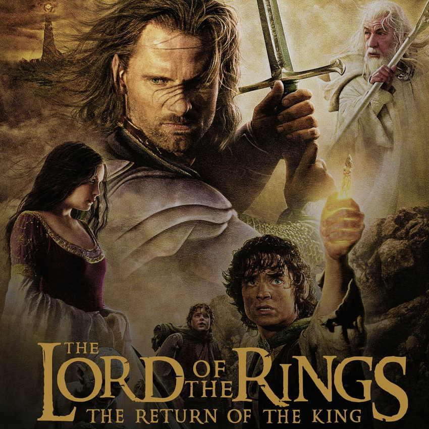

BABA

Baba , 40’lar ve 50’lerin Amerika’sında, bir
İtalyan mafya ailesinin destansı öyküsünü konu alıyor.Mario
Puzo’nun çok satan kitabından Puzo ve yönetmen Francis Ford
Coppola tarafından sinemaya uyarlanan film o yıl En İyi Film, En
İyi Erkek Oyuncu ve En İyi Uyarlama Senaryo dallarında Oscar
kazanmıştır. Yapılan araştırmalar sonucu Türkiye'de en fazla
izlenen ve satılan film olma özelliği de taşır.
Yüzüklerin Efendisi:Kralın Dönüşü

Yüzüklerin Efendisi: Kralın Dönüşü , Tek
Yüzük'ün yok edilmesi için verilen mücadeleyi konu ediyor.
Sauron'un orduları büyüdükçe büyümektedirler. Frodo ve onun can
dostu Sam, korku dolu bir yolculuğun göbeğinde, korkunç Mordor'a
adım adım yaklaşmaktadırlar. Tek yüzük yok edilmelidir ve iyilik
bunun için savaşmaya hazırdır. Arka planda ise insan, elf ve cüce
orduları, karanlık güçlerin karşısında tüm eski düşmanlıklarına
rağmen bir araya gelmişlerdir. Hepsi birden küçücük bir Hobbit'in
eline ve onun yeteneklerine bakmaktadırlar. Orta Dünya'nın kaderi
belli olmak üzeredir. Ancak Tek Yüzük'ü sahiplenmek, kimi zaman
taşıyanına daha cazip gelebilir.
Yeşil Yol

Yeşil Yol , bir hapishane görevlisi ile bir
mahkumun öyküsünü anlatıyor. Paul Edgecomb'un hapishanedeki
görevi, idama mahkum edilen mahkumları son yolculuklarına
uğurlamaktır. Çalıştığı yıllar içerisinde yüzlerce mahkumu idam
etmiştir. Bir gün John Coffey isimli korkutucu görünümlü bir
adamla tanışır. Ancak Coffey'in bu ürkütücü görünümünün altında
oldukça saf bir ruh yatmaktadır. Coffey, iki küçük kız çocuğunun
katil davasında yargılanmaktadır. Coffey'in günden güne gün yüzüne
çıkan dünya ötesi güçleri, karakteri hakkında yeni ipuçlarını
anbean ortaya çıkaracaktır.